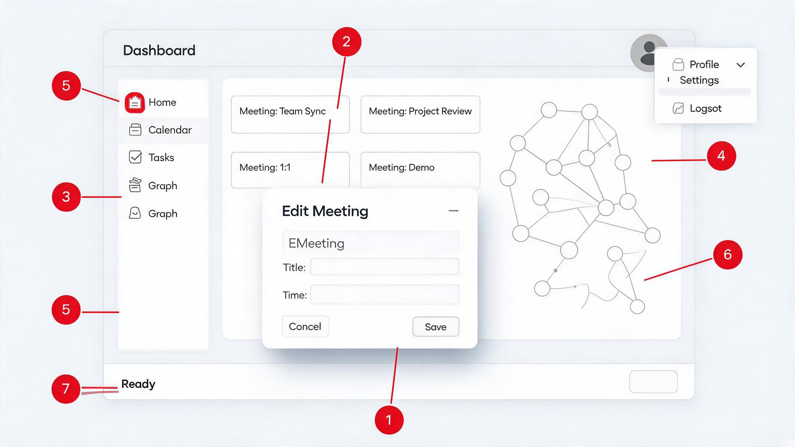
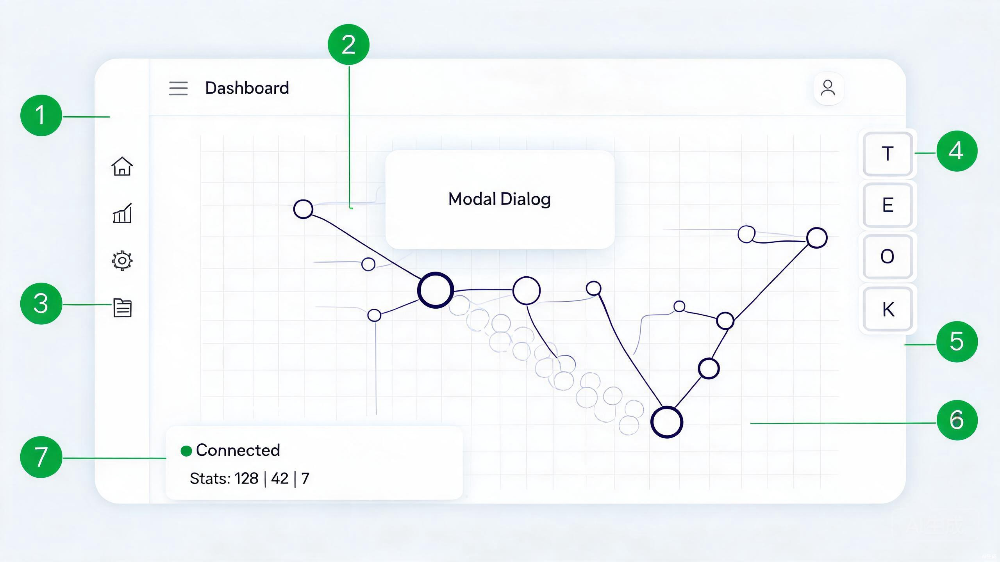

第一阶段：布局与弹出层收敛（1 周）
修改 padding、阴影、默认值、状态栏占位；跑过
npx tsc / npx eslint。
本报告对 frontend/src 的设计与布局进行系统性审查，重点聚焦你提出的五个方向：
弹窗/菜单规范、内外边距一致性、知识图谱星球跟随与画布分层、
成熟组件直接使用、整体感官丝滑与可聚焦。
报告包含现状问题、改进对照图与分阶段实施路线。
当前前端在功能层面已经跑通，但在视觉层级、间距一致性、弹出层克制、图谱交互与可聚焦性上存在明显的体感落差。 主要矛盾不是缺功能，而是 设计 token 与组件实现之间存在漂移，以及部分自定义组件超出了设计系统的边界。
当前活动前端为 frontend/src，技术栈为 React 18 + TypeScript + Vite + Ant Design，
同时混合使用了 Radix UI 与 shadcn/ui 风格的自定义封装（components/ui）。
规范来源包括 backend/app/skills/ui_design_system.yaml、PROJECT_CONVENTIONS.md §5.5 以及你的个人偏好。
| Token | 规范值 | 当前 app.css 值 | 偏差 |
|---|---|---|---|
| 背景次级 | #fafafa | #fafbfc | 可忽略，建议统一为 #fafafa |
| 主文字 | #111827 | #1a1d23 | 当前偏暖，建议收敛 |
| 常规边框 | #e5e7eb | #e2e6eb | 当前偏冷，建议收敛 |
| 阴影 sm | 0 1px 3px rgba(0,0,0,0.06) | 同上 | 符合 |
| 阴影 md | —（系统未定义） | 0 2px 8px rgba(0,0,0,0.06) | 透明度符合，但应尽量少用 |
| 卡片阴影 | 默认无，hover 才允许 sm | 部分卡片使用 shadow-sm | 卡片小阴影可保留 |
| 类别 | 文件路径 |
|---|---|
| 全局布局 | components/layout/app-shell.tsx、nav-rail.tsx、top-bar.tsx、status-bar.tsx |
| 弹窗/菜单 | components/ui/dialog.tsx、dropdown-menu.tsx、tooltip.tsx |
| 页面视图 | features/board/page.tsx、workspace/page.tsx、explore/page.tsx、graph/page.tsx |
| 图谱逻辑 | features/graph/lib/force-layout.ts、features/graph/lib/types.ts |
设计系统规定阴影应"极轻"（透明度 0.04–0.06），禁止重阴影。[1]
当前自定义弹出层普遍存在 shadow-lg 或 shadow-md，视觉上明显"跳"出界面，破坏克制的留白氛围。
components/ui/dialog.tsx:40当前实现：
'fixed left-[50%] top-[50%] ... bg-bg-elevated shadow-lg duration-150 ...'
shadow-lg 在 Tailwind 中约为 0 10px 15px -3px rgba(0,0,0,0.1)，远超规范 0.04–0.06 的范围。
建议改为 shadow-sm，或改用 Ant Design Modal，由设计 token 统一控制弹出层阴影。
components/ui/dropdown-menu.tsx:39,56当前实现：
DropdownMenuSubContent: '... shadow-lg' DropdownMenuContent: '... shadow-md'
主菜单、子菜单、命令面板等所有弹出层应收敛到同一阴影层级。建议统一为 shadow-sm，
或迁移至 antd/Dropdown + Menu，减少自定义维护成本。
components/ui/tooltip.tsx:11-39当前实现完全手写，存在以下问题：
aria-describedby 等可访问性属性。
建议直接替换为 antd/Tooltip，自动处理边界、动画、键盘可访问性，
并通过 ConfigProvider 覆盖 token 保持视觉一致。
components/layout/command-palette.tsx命令面板作为弹出层，同样应使用轻阴影，并统一圆角/边框规范。
你明确要求"非会议视图内容区 padding 为 24px 32px 32px"。
当前看板、工作区页面使用 p-6（24px 四边等距），未体现上下/左右的差异化节奏。
涉及文件：
features/board/page.tsx:74：<div className="mx-auto max-w-5xl p-6">features/workspace/page.tsx:311：<div className="flex h-full flex-col p-6">
建议统一为 pt-6 pr-8 pb-8 pl-6（即 24px 32px 32px），
让顶部呼吸感更小、左右底部更舒展，符合你偏好的页面节奏。
features/explore/page.tsx:98
时间线 header 使用 px-1，而 thought-tree header 使用 px-3，
导致同一视图下不同面板标题栏内部空间不一致。建议统一为 px-3 或按设计系统基准对齐。
components/layout/top-bar.tsx:145：高度 h-11（44px），会议视图下仍保持完整，削弱"观看可聚焦"的体验。components/layout/status-bar.tsx:26：高度 h-6（24px），略显拥挤，建议提升至 28px 并优化垂直居中。建议会议视图下顶部栏自动精简/隐藏（例如仅保留返回与会议标题），状态栏高度 28px， 给中间内容区更多垂直空间。
当前图谱在 features/graph/page.tsx 中用一个 <svg> 内嵌单个 <g> 完成所有渲染。
边、节点、标签、交互事件堆叠在一起，既难以单独控制，也无法实现"星球跟随"的拖尾效果。
features/graph/page.tsx:307-327当前拖动逻辑仅更新节点坐标：
setLayoutData((prev) => ({
...prev,
nodes: prev.nodes.map((n) =>
n.id === draggingNode ? { ...n, x, y, fixed: true } : n
),
}));
拖动过程中没有任何视觉反馈，节点像是"瞬移"。 建议引入"星球跟随"效果：拖动时在鼠标移动轨迹上生成半透明白色/品牌色小圆环， 并随时间淡出；释放节点后，在力导向作用下平滑回归原位置，形成类似行星轨道的视觉惯性。
features/graph/page.tsx:479-519当前 SVG 结构：
<g transform={`translate(${pan.x}, ${pan.y}) scale(${zoom})`}>
{/* Edges */}
...
{/* Nodes */}
...
{/* Labels */}
...
</g>
所有元素在同一个组中渲染。建议按以下五层拆分：
pointer-events: none。分层后，拖拽轨迹可以独立渲染在交互层，节点高亮 ring 也不会与节点填充产生 z-index 冲突， 同时便于后续做 WebGL 或 Canvas 迁移。
当前缩放直接通过 setZoom(z * delta) 更新，步进感明显。
建议改用 requestAnimationFrame 插值，或给 transform 加 transition（0.15s），
让缩放/平移更丝滑。力导向布局结果也可通过 react-spring 或 framer-motion 做过渡，
但鉴于项目对依赖的谨慎态度，也可先用 CSS transition 实现 80% 效果。
项目已经引入 Ant Design，但弹窗、菜单、Tooltip 仍大量基于 Radix 自定义。 自定义封装虽然灵活，却容易在阴影、圆角、动画、边界处理等细节上偏离规范，并增加维护成本。
| 当前自定义组件 | 建议替换 | 保留当前 token 的方式 | 优先级 |
|---|---|---|---|
components/ui/dialog.tsx | antd/Modal | ConfigProvider + CSS 变量覆盖 | P0 |
components/ui/dropdown-menu.tsx | antd/Dropdown / antd/Menu | ConfigProvider 主题 token | P0 |
components/ui/tooltip.tsx | antd/Tooltip | ConfigProvider 主题 token | P1 |
components/ui/button.tsx 等 | 保留 shadcn 风格，逐步评估 | — | P2 |
不建议一次性全量替换。优先迁移所有弹出层组件（Modal / Dropdown / Tooltip）， 因为这部分问题最集中、边界处理最复杂；按钮、输入框、卡片等基础组件如果当前视觉符合规范，可保留。
这部分问题最能影响"第一眼感觉"：侧边栏是否默认折叠、右侧是否有浮窗徽章、状态栏是否显示真实信息、页面切换是否丝滑。
components/layout/nav-rail.tsx:39当前 <nav className="... w-14 ..."> 已经是图标栏宽度，但展开状态固定，且每个图标 hover 时才显示文字 tooltip。
实际上当前实现已经接近"折叠"，但 Explore 左右面板默认展开（stores/ui-slice.ts:34-35：timelineCollapsed: false、thoughtTreeCollapsed: false），
与"侧边栏默认折叠、进入议题后聚焦内容"的偏好冲突。建议将默认值改为 true。
你偏好"右侧功能放在浮动小徽章上"，议题/证据/产出/报告/Token 等功能应收纳为右侧一列精致小方块徽章。
归档前端 archive/frontend-react-original/src/components/FloatingBadges.tsx 已有类似实现，
建议参考并收敛到当前设计 token（小阴影、圆角 6px、hover 展开标签）。
components/layout/status-bar.tsx:72<div className="ml-auto flex items-center gap-3"> <span>Ready</span> </div>
"Ready" 是一个无意义占位文本，破坏感官。建议替换为：当前租户、快捷键提示、版本号或最近一条系统事件。 如果暂时没有可用信息，应直接移除该区域，避免占位。
当前路由切换无过渡动画。建议给 App.tsx 外层加极淡的 fade-in（opacity 0→1，150ms），
提升页面切换的丝滑感。注意尊重 prefers-reduced-motion。
下图用编号标注了 7 个关键差异点。左图为当前问题示意，右图为建议改进示意。 具体说明见图片下方的编号对照表。


| 编号 | 现状问题 | 建议改进 | 优先级 |
|---|---|---|---|
| 1 | 弹窗/菜单使用 shadow-lg 重阴影 | 弹出层统一为轻阴影 shadow-sm，或迁移 AntD Modal | P0 |
| 2 | 页面 padding 不统一（四边等距 24px） | 非会议视图统一 24px 32px 32px | P0 |
| 3 | 侧边栏/面板固定展开 | 侧边栏保持图标栏，Explore 面板默认折叠 | P0 |
| 4 | 右侧缺少浮窗徽章 | 右侧新增议题/证据/产出/报告/Token 浮动徽章 | P0 |
| 5 | Explore 面板默认展开，挤压中间内容 | 面板默认收起，以小把手形式存在 | P1 |
| 6 | 图谱拖动无跟随效果，边/节点/标签未分层 | 星球跟随拖尾 + 画布五层分层渲染 | P0 |
| 7 | 状态栏显示 "Ready" 占位 | 状态栏显示真实连接状态与统计信息 | P1 |
dialog.tsx / dropdown-menu.tsx / 命令面板阴影为 shadow-sm。24px 32px 32px（看板、工作区）。ui-slice.ts 中 timelineCollapsed、thoughtTreeCollapsed 默认值改为 true。FloatingBadges.tsx）。Tooltip 为 antd/Tooltip。app.css 中 text-primary、border-default 至规范值。npx tsc / npx eslint。npx tsc -b --noEmit、npx eslint .、npm run build。当前前端已经具备完整的功能骨架，但视觉层级与交互细节尚未收敛到你期望的"克制、丝滑、可聚焦"状态。 最核心的矛盾集中在三点：
建议先按本报告的 P0 清单做一轮快速收敛，再逐步推进 P1/P2 优化。完成后整体感官会有明显提升。